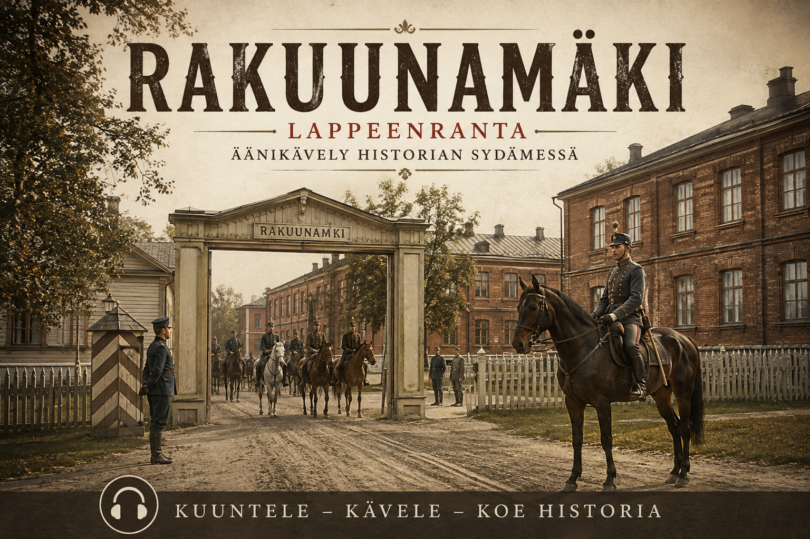
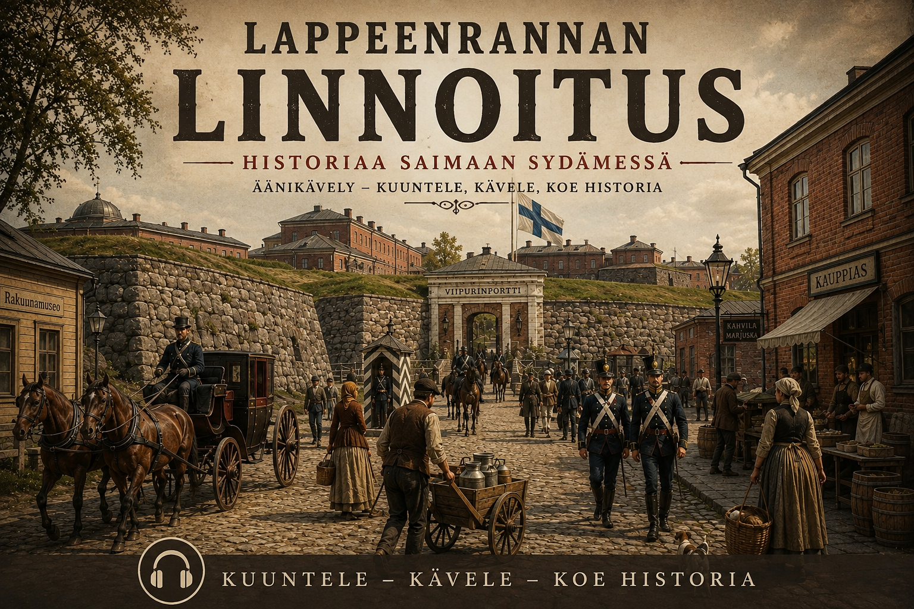

Lappeenranta
Rakuunamäki
Kulje historiallisen kasarmialueen läpi ja tutustu Rakuunamäen ratsuväkiperinteeseen, rakennuksiin ja tarinoihin.
Paikat heräävät eloon tarinoiden, äänen ja kuvien avulla.
GPS-äänikävely vie tarinan sinne, missä historia on tapahtunut. Virtuaaliesittelyyn voi puolestaan tutustua verkossa vaikka kotisohvalta.

Kulje historiallisen kasarmialueen läpi ja tutustu Rakuunamäen ratsuväkiperinteeseen, rakennuksiin ja tarinoihin.

Kulje Linnoituksen kujilla ja valleilla ja kuuntele paikan tarinoita omaan tahtiisi.
Samanlainen kokonaisuus voidaan rakentaa esimerkiksi historialliselle kohteelle, hotellille, matkailukohteelle tai kaupunginosalle. Äänikävely voi toimia paikan päällä, ja sitä voidaan täydentää verkossa katsottavalla virtuaaliesittelyllä.
Esitysten kuvituksessa, kuvien muokkauksessa, kertojahahmossa ja äänessä voidaan hyödyntää tekoälyä. Historiallinen sisältö koostetaan ja muokataan erikseen kuhunkin kohteeseen.